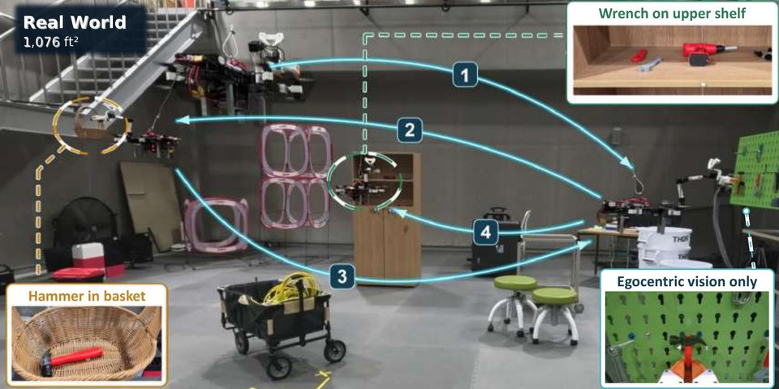
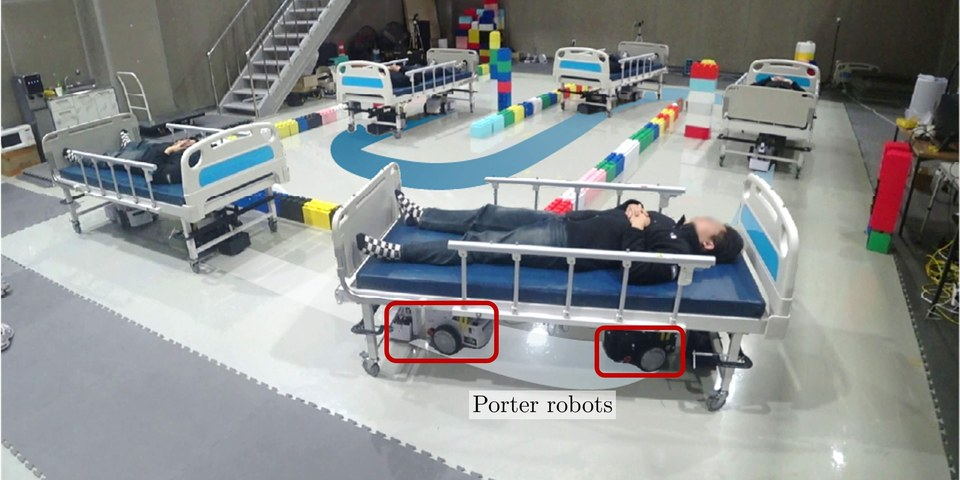
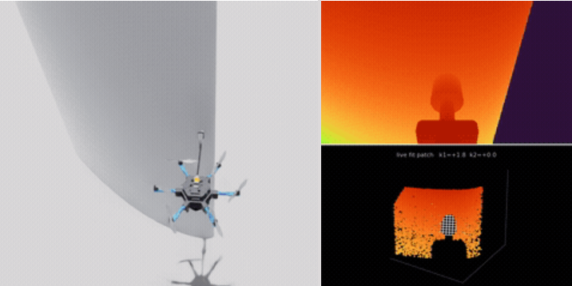
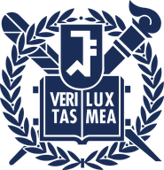

My research centers on autonomous aerial manipulation: giving flying robots the ability to understand a task and physically interact with their surroundings on their own.
Latest2026.10Fly-by-Code is out on arXiv · Project Page ↗
01
About
Bio · Advisor · Approach
I am a Ph.D. student in Aerospace Engineering at Seoul National University, working in the Lab for Autonomous Robotics Research (LARR) under the supervision of Prof. H. Jin Kim. I received my B.S. in Mechanical & Aerospace Engineering from Seoul National University in 2025.
I approach aerial manipulation from two directions. On the control side, I develop controllers for omnidirectional aerial platforms and contact-rich aerial tasks, such as robust tiltrotor control under sudden disturbances and force-regulated sliding along unknown curved surfaces. On the autonomy side, I study how embodied coding agents and vision-language models can turn natural-language instructions into reliable, multi-stage aerial manipulation behaviors that transfer from simulation to real hardware.
A geometric backstepping controller that explicitly models servo and rotor actuator dynamics, enabling omnidirectional tiltrotors to stay robust against sudden external disturbances.
02

Preprints / Under review
Fly-by-Code: Embodied Coding Agents for Aerial Manipulation with Active Visual and Physical Feedback
Jaewoo Lee*, Jeongyeon Seo*, Sihyun Cho*, Gyeongrak Choe, Yutong Wang, Bavin Saravanan, Jia-Bin Huang, Furong Huang, Sebastian Scherer, Guanya Shi, H. Jin Kim, Seungjae Lee†, Dongjae Lee†
Embodied coding agents often fail on aerial manipulators because limited onboard sensing hides task outcomes and fragile physical interaction obscures why a program failed. We introduce Active Feedback, where the agent writes diagnostic programs that run in simulation to look from informative viewpoints (View) or test failure hypotheses through targeted interaction (Probe). Across six simulated tasks, this raises task success from 31.7% to 75%, and the refined programs run on a real aerial manipulator without source-code changes.
03

Preprints / Under review
Kinematic-Slip-Aware Multi-Robot Cooperative Transportation of a Large Object in Complex Environments
Yongjun You*, Seungwoo Jung*, Sungil Son*, Jinwoo Lee*, Jaewoo Lee*, H. Jin Kim, Youngseok Jang†
Under review
A kinematic-slip-aware path-planning framework that lets multiple nonholonomic robots carry a large object through cluttered environments while maintaining rigid formation.
04

Domestic conference
Surface-Modeling-Based Hybrid Control Framework for Drone-Based Contact Tasks on Arbitrarily Shaped Surfaces
Jaewoo Lee, Jeonghyun Byun, H. Jin Kim†
ICROS Annual Conference, Daegu, Korea, 2026
1st Place · MathWorks Award, ICROS 2026
A perception-and-control pipeline that fits a superquadric model to an onboard point cloud, extracts contact normals and sliding trajectories in closed form, and tracks them with a hybrid motion/force controller combining a switching disturbance observer and RISE-based force control.
Ongoing
Aerial push-and-slide on arbitrarily shaped surfaces
Aerial manipulation with a dexterous hand
Human intention estimation for human-robot cooperation
04
Education
Seoul National University · 2019 – present

Seoul National UniversityIntegrated M.S./Ph.D. in Aerospace EngineeringAdvisor: Prof. H. Jin Kim
Mar. 2025 – Present
Seoul National UniversityB.S. in Mechanical & Aerospace Engineering